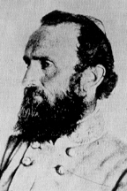

|

|

|
|
|
Thomas Jonathan Jackson was born in Clarksburg, Virginia
(now West Virginia), on January 21, 1824, to Jonathan and
Julia Beckwith Neale Jackson. He lost both parents as a
child and spent much of his youth in the household of an
uncle who owned lumber mills in Lewis County. Educated by
tutors as a youth, he entered the United States Military
Academy at West Point in 1842. Poorly prepared for the
rigorous coursework at West Point, he succeeded only by
working very rigorously on his studies. He improved his
class standing to 17th of 59 by the time of his graduation
in the class of 1846.
War had erupted with Mexico before Jackson's graduation,
and he soon found himself a second lieutenant of artillery
with the invading United States army commanded by Winfield
Scott. During Scott's campaign against Mexico City in 1847,
he fought at the siege of Vera Cruz and in the battles of
Cerro Gordo, Contreras, and Chapultepec, so distinguishing
himself that he won brevets (honorary rank for exceptional
service) to the rank of major. After a year with the
American army of occupation in Mexico, he saw peacetime
service in New York and Florida.
In 1851, Jackson accepted a professorship in artillery
tactics and natural philosophy at the Virginia Military
Institute in Lexington, Virginia. He taught there for the
next ten years, earning a reputation as an inflexible and
often boring instructor. He married twice while in
Lexington--in 1853 to Eleanor Junkin, who died in childbirth
after just more than a year, and in 1857 to Mary Anna
Morrison. Both women were daughters of Presbyterian
clerics, and Jackson himself became a devoted member of that
church. His extreme piety caused considerable comment when
he achieved military fame.
Jackson remained loyal to Virginia in the secession
crisis of 1861. A Democrat who owned a few slaves, he
harbored fewer doubts about secession than many people in
his native western region of the state. Commissioned a
Confederate colonel and given a command at Harpers Ferry, he
was promoted to brigadier general on June 17, 1861. He made
a dramatic military debut at First Bull Run on July 21,
where his brigade helped stop a Federal assault and turn the
tide in the war's first big battle. Jackson also won his
famous nickname that hot July afternoon when a South
Carolina officer pointed toward him and shouted, "There is
Jackson standing like a stone wall." Promoted to major
general on October 7, 1861, he shortly thereafter assumed
command in the Shenandoah Valley and mounted a largely
ineffective campaign into western Virginia that winter.
On the eve of his celebrated Shenandoah Valley campaign,
Jackson was known as a good soldier but had yet to gain wide
fame. Robert E. Lee sketched the broad outline of the
Shenandoah operation, hoping Jackson would tie down northern
forces under Nathaniel P. Banks and John C. Frémont in the
Valley, and farther west in the Allegheny Mountains, so they
could not reinforce the Federal army menacing Richmond. An
initial clash at First Kernstown on March 23, though a
tactical defeat for Jackson, prompted the Federals to retain
troops in the lower Valley. Reinforced to 17,500 by early
May, Jackson embarked on a whirlwind of action. He struck
part of Frémont's force west of Staunton at McDowell on May
8, then marched back to the Valley and turned northward to
capture a Federal garrison at Front Royal on May 23 and
defeated Banks in the battle of First Winchester two days
later. Continuing on to the Potomac River, he subsequently
moved south to the vicinity of Harrisonburg, eluding Federal
forces under Fr émont and James Shields. In early
June, he turned to meet his pursuers, defeating Fr
émont at Cross Keys on the 8th and Shields at Port
Republic on the 9th. The Federals withdrew northward,
freeing Jackson to reinforce Lee's army outside Richmond.
Jackson had used rapid movement and boldness to craft a
memorable success. His victories, which came in the midst
of a run of southern defeats, not only prevented a Federal
concentration at Richmond but also lifted Confederate
civilian morale. Typical of reactions behind the lines was
that of a diarist in Richmond, who wrote that "General
Jackson is performing prodigies of valor in the Valley."
Jackson participated in all of the great battles in the
Eastern Theater during the remainder of 1862. He stumbled
badly at the Seven Days, and also failed to carry out his
assigned roles at Mechanicsville, Gaines's Mill, and White
Oak Swamp. Detached by Lee from the army at Richmond in
early August, he defeated a portion of John Pope's Army of
Virginia on the 9th near Culpeper in the battle of Cedar
Mountain. Later that month, he carried out a memorable
march around Pope's right flank, destroying a vast Union
supply depot at Manassas Junction and setting the stage for
Lee's victory at the battle of Second Bull Run on August
28-30. He played a key role in the Maryland campaign in
September, capturing the 12,500-man Federal garrison at
Harpers Ferry on the 15th and then joining the rest of the
army near Sharpsburg, Maryland, for the bloody fighting at
Antietam on the 17th. Promoted to lieutenant general on
October 10 and given command of the Second Corps in the Army
of Northern Virginia, he defended Lee's right flank in the
Confederate victory at Fredericksburg on December 13.
Jackson's reputation reached new heights during the
Chancellorsville campaign in May 1863. Confronting a
superior Federal force, he and Lee decided on a bold
response. On May 2, Jackson took his corps on a flank march
around the Army of the Potomac, launching an attack that
routed the Federal Eleventh Corps. In the confusion of
battle and darkness that evening, he was wounded by his own
men. His left arm was amputated that night, and, though it
seemed at first that he would recover, he died eight days
later. President Jefferson Davis spoke for the Confederate
people in describing Jackson's death as a "great national
calamity," and Robert E. Lee remarked that the army would
miss "the daring, skill and energy of this great and good
soldier."
Source: Joan Waugh, ed., Facts on File Encyclopedia of American
History: Civil War and Reconstruction, 1856 to 1869 (New York: Facts on
File, 2003), 185-186.
|